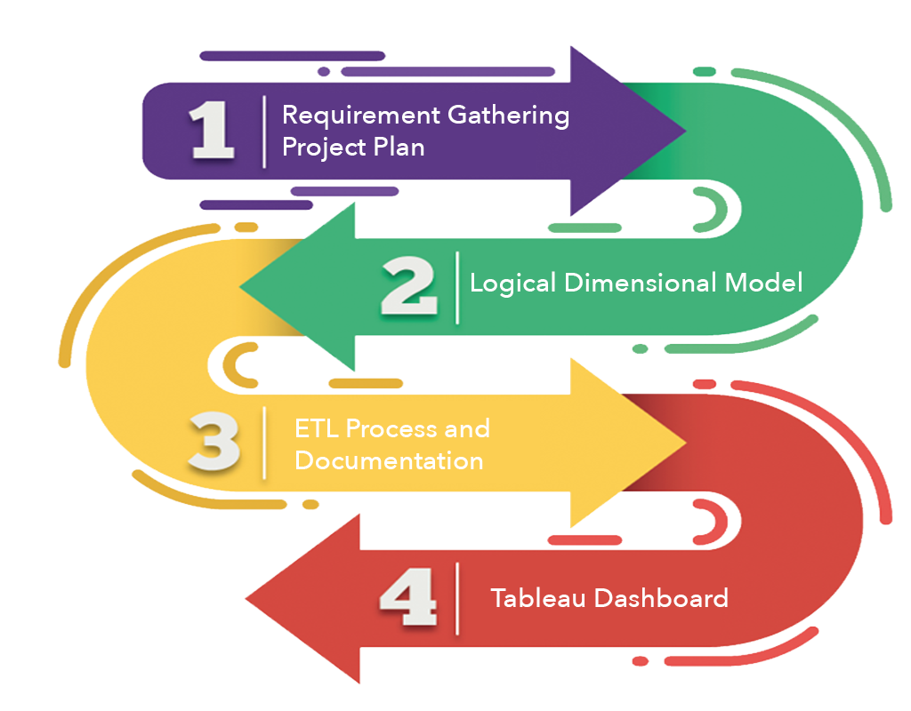
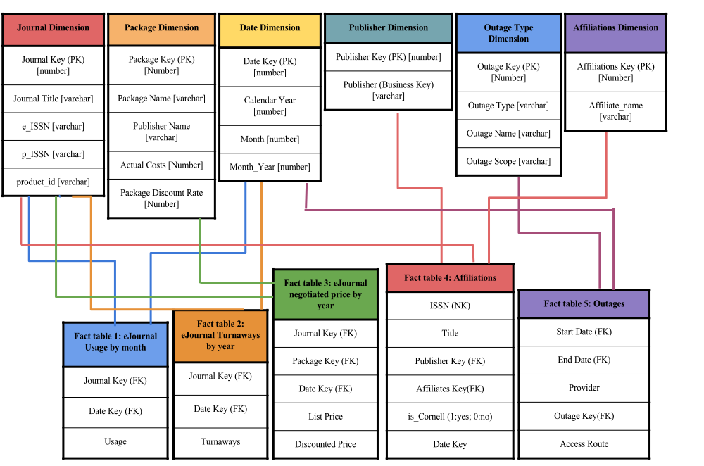
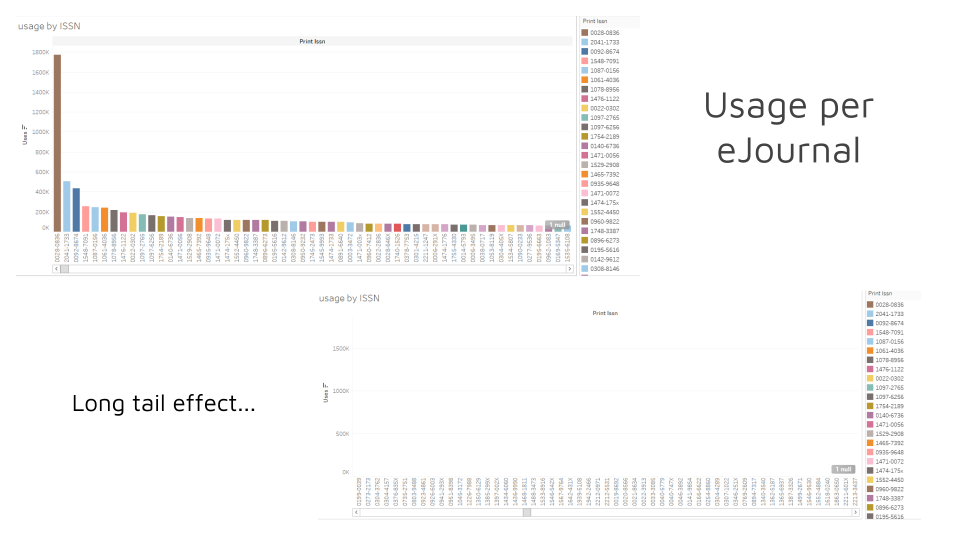
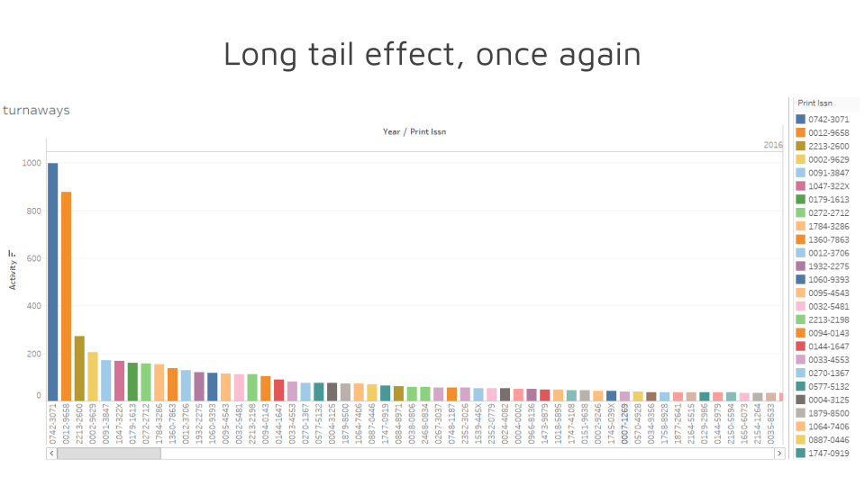
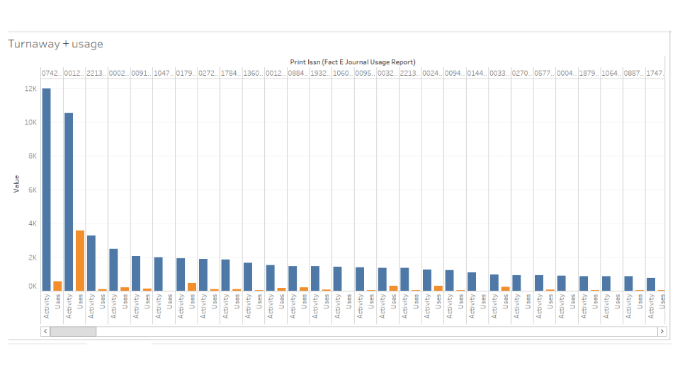
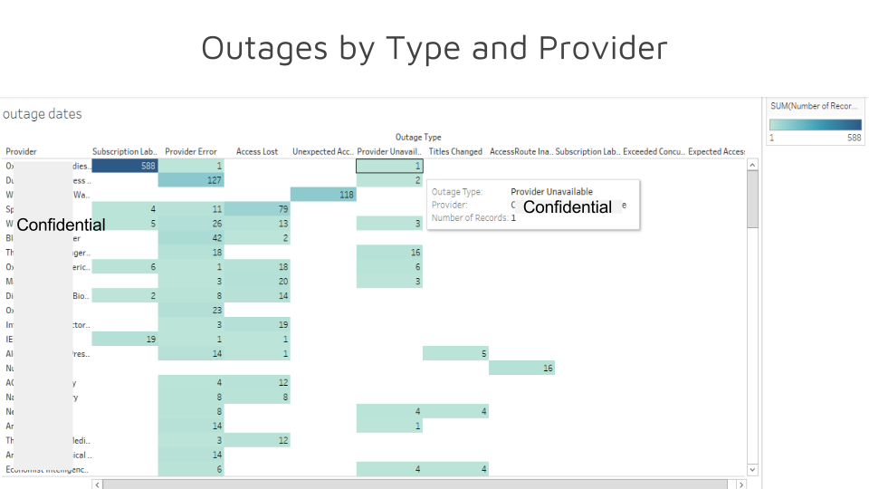

EJOURNAL MANAGER
A Tool for managing the University’s library funds wisely
ABOUT
In this project, we built a tool to manage e-journals and book packages in Cornell library. This tool could help library to evaluate electronic journal and book packages in order to manage the University’s limited funds wisely. It includes logical dimensional data modeling, ETL documentation and data visualization.
DIMENSIONAL DATA MODELING
DATA INSIGHTS
In the below worksheet, the ISSNs are sorted by total usage (year is disregarded). Through comparing the first and second image, we can observe that there is a long tail of ISSNs that are used very infrequently/not used at all.
There are a few ISSNs which have a lot of usage, while the vast majority of ISSNs (journals) are not accessed very often. In this data, we can see that many of the eJournals that Cornell subscribes to are not accessed very often/at all. From the business perspective, this indicates that Cornell may consider decreasing the number of eJournals it subscribes to, which will cut costs while having a negligible impact on users.
The following graph is another representation of the turnaway activity of the journals, arranged in descending order by the number of turnaways. Concentrated number of eJournals with high amounts of turnaways, and many eJournals with very few turnaways. This suggests that Cornell may want to focus their resources on ensuring that the few eJournals that have high amounts of turnaways are available, since users are unsuccessfully requesting those the most.
The worksheet below show the relationship between usage and turnaway. There are a select few number of eJournals (ISSNs) that are in high demand (high turnaway activity, which indicates that a lot of people are trying to access them). There is very low usage for most of them, which indicates that either Cornell has subscribed in the past and should resubscribe, or that Cornell should start subscribing to those journals.
I also provide relationships between journal providers and outrage type. It can help librarian figured out the source of the outage.
